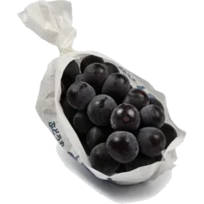

Japanese fruits,
exceptional by nature.
Grown with precision.
Selected with care.
Presented as nature intended.
Experience the finest Japanese fruits, renowned for their purity, flavour and beauty.
Our collection
Discover Japanese favourites
From iconic melons to delicate berries, explore our selection of premium in season Japanese fruits.

Crown Melon
View online

Pione Grapes
View online

Miyazaki Mango
View online

Fuyu Persimmon
View online

Japanese fruit
The finest in
the world.
In Japan, gifting fruit is a deeply rooted tradition expressing high respect and gratitude.
These fruits are hand-grown with meticulous care to achieve flawless shapes, perfect sweetness and uniform colouring.
They are elegantly boxed and presented like fine jewellery or vintage wine.
It's always such a pleasure seeing customers go from unconvinced to
completely in awe after trying our Pione Grapes.
No need to go to Harrods, we have a selection of highly sought after Japanese luxury fruits right here!
From Crown melons selling at £115 each to Miyazaki mangoes – a pair of which sold at auction for £4,000.
The Crown Melon is a hand-massaged, single-stem musk melon grown in Hokkaido or Shizuoka,
famous for its perfectly round shape and rich melt-in-your-mouth sweetness.
The Pione Grape is highly prized in Japan, frequently gifted in elaborate, cushioned boxes.
The Miyazaki Mango also known as Taiyo no Tamago meaning Egg of the Sun,
is a ruby-red mangoes, classified by hitting a strict weight and sugar thresholds.
It is highly prized for its intensely sweet,
almost candy-like flavour, completely fibreless flesh, and a creamy, melting texture.
The Fuyu Persimmon is a traditional autumn fruit given for its crisp, sweet and non-astringent flesh.
Japanese fruits
Muskmelon
Japanese muskmelons are some of the finest melons in the world, cultivated with extraordinary care to achieve perfectly rounded shapes, intricate netting and exceptional sweetness. In premium production, growers may leave just a single fruit on each plant, allowing it to receive the full benefit of the plant's nutrients. Each melon is carefully tended throughout its growth, with the fruit rotated and individually cared for to encourage beautifully even colouring and netting. Beneath the delicate, lace-like skin is pale, incredibly juicy flesh with a rich honey-like sweetness and a wonderfully soft, melting texture. Their combination of appearance, fragrance and flavour makes a perfectly grown Japanese muskmelon a true luxury fruit, traditionally presented as an extravagant and deeply thoughtful gift.

Crown melon
Shizuoka Crown Melons are among the most prestigious fruits Japan has to offer, grown individually with an almost obsessive level of care and precision. Each plant produces a single melon, allowing the grower to concentrate its energy into producing one exceptionally beautiful fruit. The result is the unmistakable perfectly round shape, intricate netted skin and distinctive T-shaped stem associated with premium Crown Melons. Inside is pale green flesh that is extraordinarily juicy, fragrant and sweet, with a smooth, almost melting texture that makes the fruit feel more like a dessert than an ordinary melon.

Fuyu persimmon
Experience the taste of autumn in Japan with Fuyu persimmon. Widely regarded as a traditional autumn treat (persimmon is the national fruit of Japan!), Fuyu persimmon is an ancient delicacy. Of the 1000 varieties in Japan, Fuyu stands out as one of the most popular persimmons in the world. Beneath glossy orange and satisfyingly crisp skin is a melt-in-the-mouth sweet flesh that will keep you hooked. Their taste is very sweet with hints of cinnamon, honey and brown sugar. They are non astringent and offer different flavours at different stages of ripeness. As the fruit ripens, it becomes softer and juicier with a gloriously intensified sweetness. Our black sesame persimmons are just as sweet and juicy, while being even more unique. An uncommon black-flesh variety, these persimmons get their colour from a specific growing method. The fruits are exposed to sunlight for a longer period of time and picked only when completely mature, creating a deeper sweetness and a non-astringent texture. Although best enjoyed simply eaten fresh out of hand, Japanese persimmons are very versatile, being suited to a range of culinary applications whether they are firm and dense or have the softness and squishiness of full maturity. We'd especially recommend cooking them into jams and chutneys, adding slices to fruit salads, chopping them into salsas, and incorporating them into sweet baked goods such as tarts and pies! As well as being versatile, Japanese persimmons are a good source of vitamin A and C, as well as dietary fibre and antioxidants.

Pione grapes
Pione grapes are a favourite in Japan for their incredible sweetness. If you like grapes, these are the ones to try! Beneath their thick purple-red skin is a translucent green flesh with a jelly-like consistency and moderate acidity, making for a sweet-tart flavour with wine-like undertones. (In fact, they’re almost like having a mouthful of wine!) In Japan, Pione grapes are best enjoyed by first chilling and peeling the grapes, before eating fresh out of hand. Their exquisite sweetness is almost reminiscent of a dessert. Their unbelievable juiciness and delicious sweetness has given pione grapes a place of honour in the world of Japanese grapes. Why not treat yourself or someone special to the best grapes you’ll ever try, packaged in an attractive gift box.

Shine muscat grapes
Experience the luxury of shine muscat grapes, nicknamed ‘sweet jewels.’ The perfect gift for any fruit-lover. Grown in the Yamanshi prefecture in Japan where the sunlight hours and temperatures are optimal, shine muscat grapes are cultivated with extreme dedication and care, resulting in perfect clusters that can each bear as many as 100 grapes! Farmers allow the sweetness of the grapes to slowly concentrate until harvest. After that, each bunch is inspected to guarantee quality and ensure a standardised sugar content and weight. But none of that would be important without their unrivalled taste. They are larger, juicier and more crisp than store grapes, with an unparalleled freshness, a sublime sweetness and a strong acidity reminiscent of citrus fruits. There's a reason they're so popular! Their delightful sweetness and appearance make shine muscat grapes a cherished treat in Japan, and an increasingly highly regarded one here as luxury fruit is being discovered in the UK. Why not give them as a gift to someone special or better, try them for yourself!

Miyazaki mangoes
Discover one of the most expensive mangoes in the world! Named after the region it is exclusively grown in, the Miyazaki mango is the product of extreme expertise and optimal conditions. In the 1980s, Japanese farmers birthed Miyazaki mangoes through meticulous farming techniques and it has since become a symbol of extreme prestige in Japanese gift-giving culture. Their beautiful deep red to purple hue has earned them the nickname ‘dragon’s egg,’ but it’s what’s underneath that makes them so special. Beneath their bright skin is a vivid golden yellow flesh that is intensely sweet, supremely juicy, and almost entirely fibreless. Their creamy texture means that each bite practically melts in the mouth. It’s not hard to see why Miyazaki mangoes are so delicious, when you discover how much time, effort and expertise goes into their cultivation. Grown exclusively in Miyazaki, southern Japan, these special mangoes are kept inside temperature-controlled greenhouses where everything from humidity to sunlight are controlled at every stage. Farmers are so precise that up to 80% of young mango buds are removed from each tree, allowing the remaining fruit to receive the full benefit of nutrients and ensuring that they can grow larger and sweeter. Each fruit is wrapped in a protective net above a strategically placed reflector to ensure the sun hits evenly. Farmers then wait for the fruit to naturally fall from the tree, a sign that they are perfectly ripe. Even then, each fruit is rigorously tested for weight, sugar content, shape and appearance, meaning that only the best are chosen. Such efforts mean you can be assured that each Miyazaki mango you receive is the best it could possibly be, offering an unrivalled taste experience. So why not treat someone special with this premium fruit, You won’t taste another mango quite like it!

Sun Fuji apple
Discover the exquisite sun fuji apple from Aomori Prefecture in Japan. The perfect luxury fruit for gifting to an apple or fruit connoisseur. For someone who appreciates the finest food. Renowned for its vibrant red skin that mirrors the sun, this apple not only captivates the eye but also boasts a unique 'honey core.' This natural feature is the sugars in the apples moving to the centre to provide a remarkable defence against the extreme temperature fluctuations typical of the Fuji Mountain region. The apples can be exposed to temperatures between -20 to +10 in the same day! Apples from trees with the most prominent honey-core attract the highest market rate. Each bite reveals a rich flavour, an elevated apple experience. Its delightful sweetness and hint of acidity make the sun fuji apple a cherished treat in Japan, and increasingly more here at one as luxury fruit is being discovered in the UK. For a special occasion, or as an elegant addition to any gift basket. Indulge yourself, or someone special, with this exceptional fruit.

Chii-chan's remembrance apple juice
100% straight-squeeze apple juice produced by Tandai Seika in Aomori Prefecture, made using an exquisite blend of five carefully selected varieties of Aomori apples. Each variety brings its own character to the blend, creating a beautifully balanced juice with mellow sweetness, gentle richness and a wonderfully fresh, crisp finish. The apples are carefully pressed to capture their natural flavour and fragrance, resulting in a juice that is smooth, refreshing and full of the distinctive character of freshly harvested Japanese apples. Rather than being overly sweet, it has a delicate balance between sweetness and acidity, giving it a clean and refreshing taste that makes it exceptionally easy to drink. Made with the quality and care for which Aomori's apple growers are renowned, this is a wonderfully refined apple juice that allows the fruit itself to take centre stage. Every glass offers the pure, concentrated flavour of five exceptional apple varieties, making it a delicious choice for enjoying chilled on its own or serving as part of a special breakfast, afternoon refreshment or luxurious Japanese-inspired occasion.

A taste of Japan
Our pione grapes our a favourite among customers for their slightly more accessible price. They can be bought individually for £2.70 each, a price which got us flamed on social media, for good reason. But it really is an experience like no other, our customers faces go from unconvinced to in awe at the taste. Customers buy a single grape to try, and end up with one for each member of their family.
Luxury gifts
Our Japanese fruits make truly exceptional luxury gifts for friends, family, colleagues and clients. Carefully selected for their beauty, rarity and extraordinary flavour, they offer a memorable alternative to more traditional gifts. For even more exceptional gifts, explore our separate collection of luxury fruits and carefully selected produce, available to order online and delivered directly to your door.